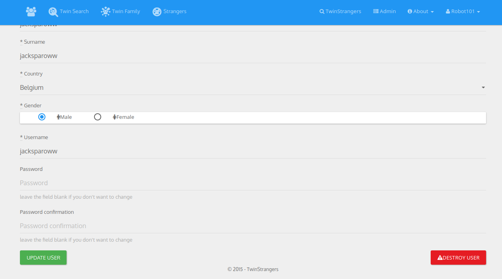

First you need to go to the TwinStrangers page. (Logged as an admin of course)
Note
You only need to know a username to find a user. But you can also find one with their name, firstname or email address.
Just click on the show button to display the user profile page.
On the user profile page is displayed their twinfamily. See that the best ones are displayed with a gold star on the left.
You can generate an email template to make contact with the TwinStranger, just click on the small enveloppe to generate this email. It will be open in your email client to give you the option to modify it before sending it. Here Janine has found her TwinStranger Paula. We then send an email to Paula with the pictures of Janine.
When you find a user that you want to ban (it will actually lock their account). Just click on the lock on the right.
A confirmation dialog will then appear to confirm the change.
Note
If you want to unlock a user it can be done in the Admin panel.
On a user profile you have a link to edit their account.
You can then edit some of their informations and save by pressing the Update User button.
On the edit user form you will have a Destroy User button that do so.
A confirmation dialog will then appear to confirm the change.
Note
If you delete an account, the user’s informations will be destroyed from the database. That means their is no way to retrieve it. You should rather use the locking option when a user violate the terms so that they cannot recreate an account.
You can use filters. Sort by name (asc/desc), last sign-in/sign-up. Filter by country, locked only, admin only, confirmed account only. You can of course find a user by username, email or name in the search bar.
If you locked a user by mistake you can undo it here:
You will then be asked confirmation